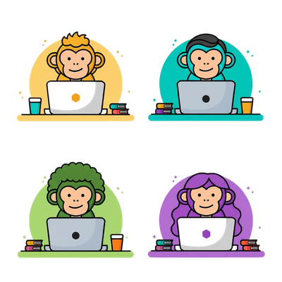

Base
Saia da pré-história digital
- Criação de redes sociais
- Identidade visual inicial
- Posts estratégicos
- WhatsApp Business
A APES Digital ajuda negócios a saírem do zero e crescerem no mundo digital com estratégia, presença e resultado.
Quero evoluir meu negócio

Muitos negócios ainda dependem apenas de indicação ou ponto físico, enquanto concorrentes crescem todos os dias no digital.
Não é falta de esforço. É falta de estrutura.
Desde as primeiras ferramentas até o mundo digital, quem aprende a usar os recursos certos sobrevive — e cresce.
Hoje, o digital é a principal ferramenta de crescimento de qualquer negócio.

Guiamos seu negócio em cada etapa da evolução digital, com estratégias personalizadas e foco em resultado real.
Saia da pré-história digital
Use as ferramentas certas
Crescimento e escala
Comece agora sua evolução digital com a APES.
Falar no WhatsApp